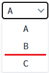

AutoComplete의 onchange 이벤트와 onviewchange 이벤트의 동작을 비교하는 예제입니다.
다음은 각 이벤트의 설명입니다.
onviewchange : 사용자의 화면 조작으로만 발생하는 이벤트
onchange : 사용자의 화면 조작과 script 등 AutoComplete의 값이 변하는 경우 발생하는 이벤트
AutoComplete의 onchange의 동작 확인하기
AutoComplete의 onviewchange의 동작 확인하기
1
STEP 1: 초기 상태를 확인합니다.
AutoComplete에는 'onchange' 이벤트와 'onviewchange' 이벤트 핸들러가 모두 등록된 상태입니다.
2
STEP 2: 선택 항목을 변경합니다.
'B' 항목을 선택합니다.
Image 1.브라우저(Chrome) 실행 예시

3
STEP 3: 실행 결과를 확인합니다.
'B' 항목이 선택되고 'onchange' 이벤트와 'onviewchange' 이벤트가 발생되어 로그가 출력됩니다.
Example 1.Log
[11:32:50] [Even: onchange] 발생 [11:32:50] [Even: onviewchange] 발생
4
STEP 4: 스크립트로 선택 항목을 변경합니다.
"setValue 메소드로 'C' 항목 선택하기" 버튼을 클릭합니다.
AutoComplete의 'setValue' 메소드을 사용하여 'C' 항목을 선택합니다.
5
STEP 5: 실행 결과를 확인합니다.
'C' 항목이 선택되고 'onchange' 이벤트가 발생되어 로그가 출력됩니다.
Example 2.Log
[11:37:45] [Even: onchange] 발생
1
Input의 이벤트를 정의합니다.
onviewchange, onchange 이벤트의 핸들러를 정의 합니다.
[필수] onviewchange="scwin.acb_exam_onviewchange"
onviewchange 이벤트가 발생할 때 실행할 메소드를 지정합니다.
[필수] onchange="scwin.acb_exam_onchange"
onchange 이벤트가 발생할 때 실행할 메소드를 지정합니다.
Example 3.Script
//AutoComplete 'acb_exam'의 'onviewchange' 이벤트 핸들러 scwin.acb_exam_onviewchange = function(info) { //로그 출력 console.log(onviewchange 발생); };
Example 4.Source
<w2:autoComplete ev:onviewchange="scwin.acb_exam_onviewchange">
<!-- 중략 -->
</w2:autoComplete>onviewchange(info)
info.newValue
info.oldValue
onchange(info)
info.newValue
info.oldValue